Generating Magic:the Gathering cards using AI

Someday, someone will best me. But it won’t be today, and it won’t be ChatGPT.
Table of Contents:
Introduction
Generative AI (GenAI) is a type of Artificial Intelligence that can create a wide variety of data, such as images, videos, audio, text, and 3D models. It does this by learning patterns from existing data, then using this knowledge to generate new and unique outputs. GenAI is capable of producing highly realistic and complex content that mimics human creativity, and in recent years it is used to fasten the human process of generating content. This specific kind of Artificial Intelligence lately has raised an enormous public interest, both for its possible applicability and its controversies. In this post I’ll jump on the AIGeneration train and use it for creating custom, never seen and totally plausible Magic the Gathering cards.
Approach
Which are the attributes that compose a Magic the Gathering card? 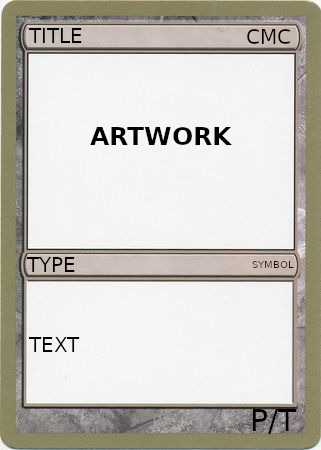
- Title defines the name of the card
- CMC defines the mana cost of the card; in the most common cases, it’s composed by a number, which refers to the colorless mana, and a mana symbol, which defines the colored mana needed to cast the spells. Sometimes the mana cost can have strange variations, such has hybrid mana costs, Pyrexian mana cost or even no mana cost!
- Artwork defines the image of the card, it occupies the most space on the card.
- Type defines the type of the card: most of the cards belongs to supertype such as Creature, Sorcery, Enchantment, Artifact, Land or Planeswalker, but multiple others were forged.
- Symbol defines the symbol of the edition and the rarity of the card based on irs color (black for common, silver for uncommon, gold for rare and magenta for mythic rare).
- Text defines the ability of the card: it can be non existent, almost non-existent or very long. The card may describe the in-game characteristic of the card and/or the lore of it.
- Power/Toughness (P/T) are characteristics unique to creatures that defines how much damage the creature deal and how much damage the creature can suffer before being send to the graveyard.
{kind=link}
{kind=link}
{kind=link}
{kind=link}
{kind=link}
{kind=link}
In this blogpost, I’m going to briefly describe how generate all the aforementioned characteristic of a card using AI. In this application, we’re going to use an ensamble approch, using two models in order to render the card: ChatGPT for generating all the attributes of the card, and StableDiffusion for generating the artwork. As for the layout, we used a blank one that we’re updating with the generations.
Bonus: what’s ChatGPT?
ChatGPT is an artificial intelligence (AI) chatbot developed by OpenAI and released in November 2022. It is built on top of OpenAI’s GPT-3.5 and GPT-4 families of large language models (LLMs) and has been fine-tuned (an approach to transfer learning) using both supervised and reinforcement learning techniques. ChatGPT is a member of the generative pre-trained transformer (GPT) family of language models. The fine-tuning process leveraged both supervised learning as well as reinforcement learning in a process called reinforcement learning from human feedback (RLHF). Both approaches use human trainers to improve the model’s performance. In the case of supervised learning, the model was provided with conversations in which the trainers played both sides: the user and the AI assistant. In the reinforcement learning step, human trainers first ranked responses that the model had created in a previous conversation. These rankings were used to create “reward models” that were used to fine-tune the model further by using several iterations of Proximal Policy Optimization (PPO). ChatGPT’s training data includes man pages and information about internet phenomena such as memes, programming languages such as bulletin board systems and community discussion about multiple arguments strictly related to the web.
Although the core function of a chatbot is to mimic a human conversationalist, ChatGPT is versatile. It can write and debug computer programs, write business pitches, compose music, fairy tales and student essays, answer test questions (sometimes, depending on the test, at a level above the average human test-taker), write poetry and song lyrics, and, as demonstrate in this brief blogpost, generating Magic the Gathering cards.
Bonus: what’s Stable Diffusion?
Stable Diffusion is a deep learning, text-to-image model released in 2022. It is primarily used to generate detailed images conditioned on text descriptions, though it can also be applied to other tasks such as inpainting, outpainting, and generating image-to-image translations guided by a text prompt. It was developed by the start-up Stability AI in collaboration with a number of academic researchers and non-profit organizations.
Stable Diffusion is a latent diffusion model, a kind of deep generative neural network. Its code and model weights have been released publicly, and it can run on most consumer hardware equipped with a modest GPU.
Stable Diffusion uses a kind of diffusion model (DM), called a latent diffusion model (LDM) developed by the CompVis group at LMU Munich. Introduced in 2015, diffusion models are trained with the objective of removing successive applications of Gaussian noise on training images which can be thought of as a sequence of denoising autoencoders. Stable Diffusion consists of 3 parts: the variational autoencoder (VAE), U-Net, and an optional text encoder. The VAE encoder compresses the image from pixel space to a smaller dimensional latent space, capturing a more fundamental semantic meaning of the image. Gaussian noise is iteratively applied to the compressed latent representation during forward diffusion. The U-Net block, composed of a ResNet backbone, denoises the output from forward diffusion backwards to obtain a latent representation. Finally, the VAE decoder generates the final image by converting the representation back into pixel space. The denoising step can be flexibly conditioned on a string of text, an image, or another modality. The encoded conditioning data is exposed to denoising U-Nets via a cross-attention mechanism. For conditioning on text, the fixed, pretrained CLIP ViT-L/14 text encoder is used to transform text prompts to an embedding space. Researchers point to increased computational efficiency for training and generation as an advantage of LDMs.
Stable Diffusion was trained on pairs of images and captions taken from LAION-5B, a publicly available dataset derived from Common Crawl data scraped from the web, where 5 billion image-text pairs were classified based on language and filtered into separate datasets by resolution, a predicted likelihood of containing a watermark, and predicted “ aesthetic” score (e.g. subjective visual quality).
The text to image sampling script within Stable Diffusion, known as “text2img”, consumes a text prompt in addition to assorted option parameters covering sampling types, output image dimensions, and seed values. The script outputs an image file based on the model’s interpretation of the prompt. Generated images are tagged with an invisible digital watermark to allow users to identify an image as generated by Stable Diffusion, although this watermark loses its efficacy if the image is resized or rotated
Code
Here I’ll quickly describe the main parts of the process with a brief description of the approaches used:
Attribute generation
The card’s attribute are generated using ChatGPT queried with a very specific system prompt, asking the design of cards with very strict rules and defining all the requirements. In conjunction, an example card’s structure is passed to the model. Then, another prompt is declared, that defines the domain of the card generation: in this case, I’ll decide to use Harry Potter.
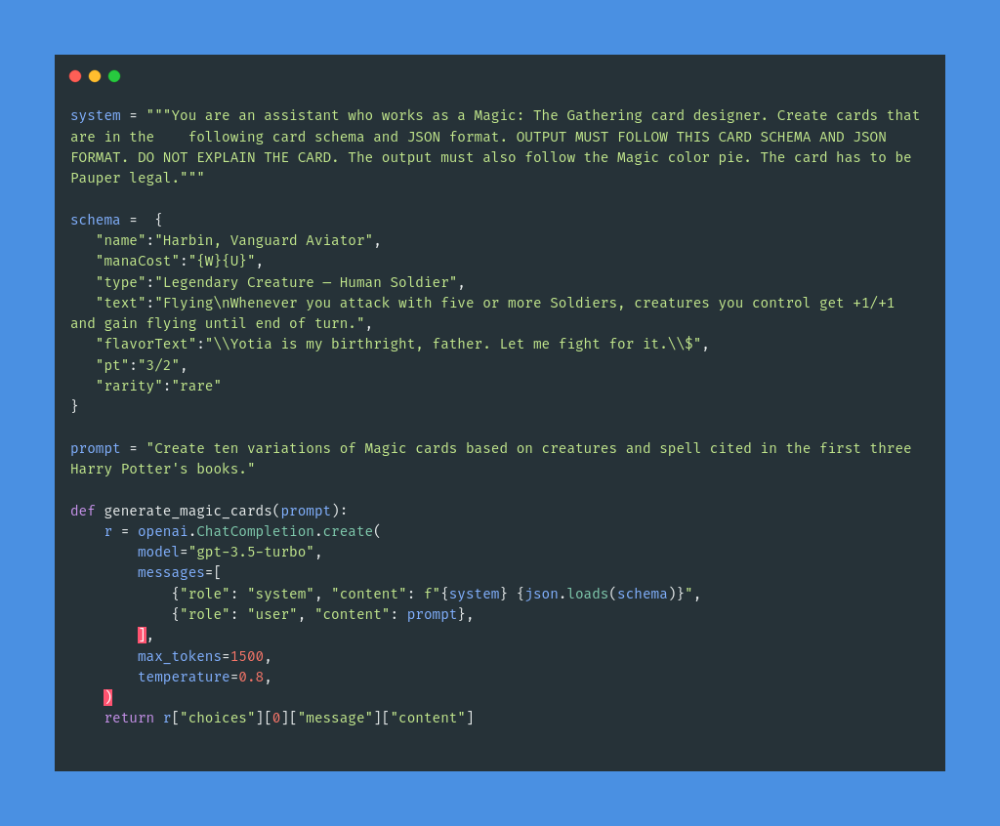
Artwork generation
The card’s artwork is generated simply using the card’s title; more complex approaches can be used, for example using a more detailed prompt.
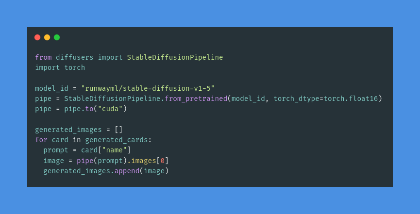
Layout generation
Layout generation is as simple as it is: it has been used a blank card layout, where all the attributes are hot encoded inside. This method, which is very fast, is also very error-prone, but i wanted to be more focused on the AI part instead of this one. 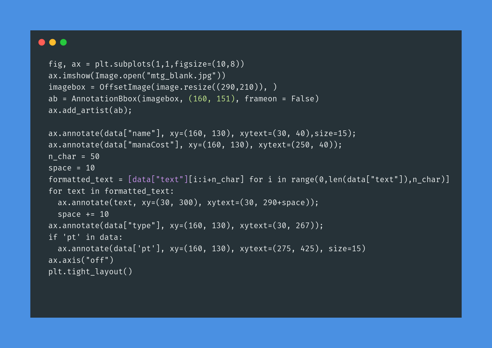
Final Result
Card generated are totally fine and more or less follows the plot of the first books.
| Card | Title | CMC | TYPE | TEXT | RARITY | CMC |
|---|---|---|---|---|---|---|
| 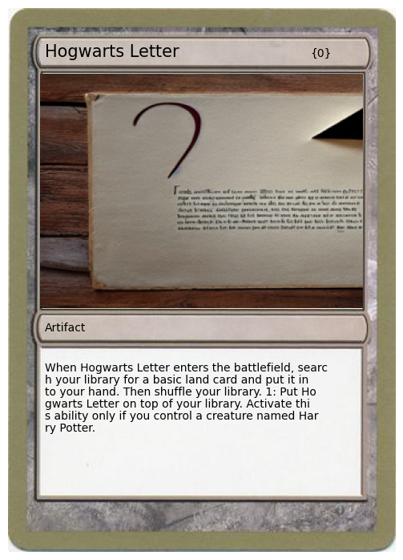 | Hogwarts Letter | 0 | Artifact | When Hogwarts Letter enters the battlefield, search your library for a basic land card and put it into your hand. Then shuffle your library. 1: Put Hogwarts Letter on top of your library. Activate this ability only if you control a creature named Harry Potter. | Uncommon | 0 |
| 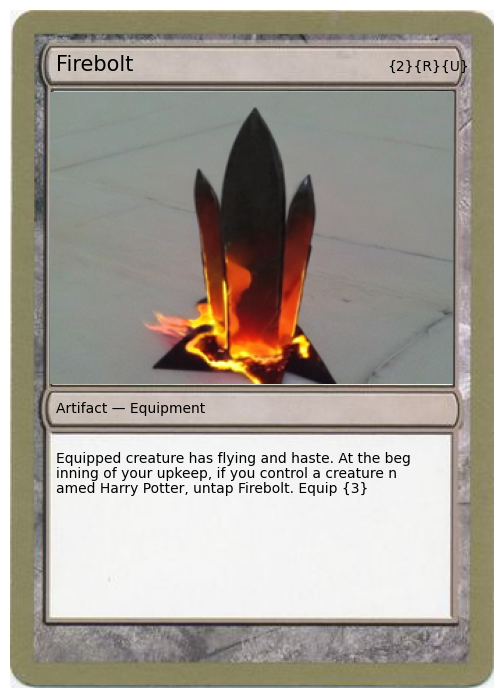 | Firebolt | 0 | Artifact | Equipped creature has flying and haste. At the beginning of your ‘upkeep, if you control a creature named Harry Potter, untap Firebolt. Equip {3} | Rare | 2RU |
| 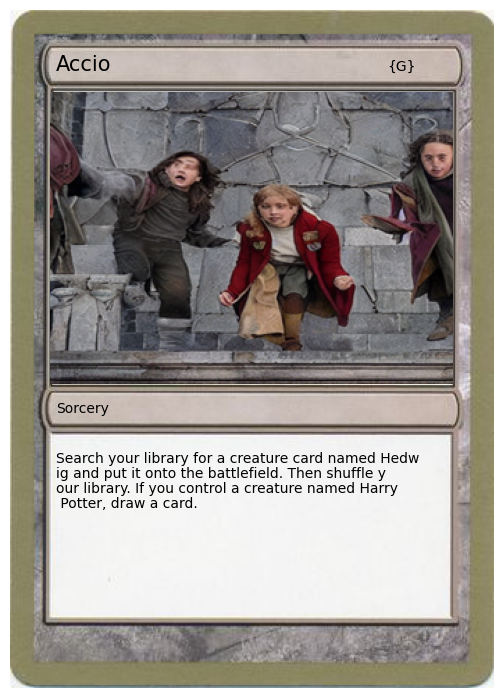 | Accio | 0 | Sorcery | Search your library for a creature card named Hedwig and put it onto the battlefield. Then shuffle your library. If you control a creature named Harry Potter, draw a card. | Rare | G |
| 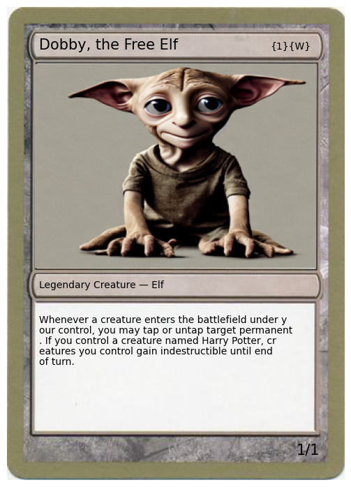 | Dobby, the Free Elf | 0 | Legendary Creature — Elf | Whenever a creature enters the battlefield under your control, you may tap or untap target permanent. If you control a creature named Harry Potter, creatures you control gain indestructible until end of turn. | Rare | 1W |
| 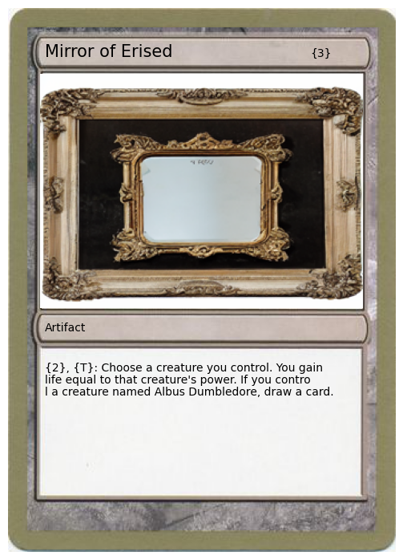 | Mirror of Erised | 0 | Artifact | {2}, {T}: Choose a creature you control. You gain life equal to that creature’s power. If you control a creature named Albus Dumbledore, draw a card. | Rare | 3 |
| 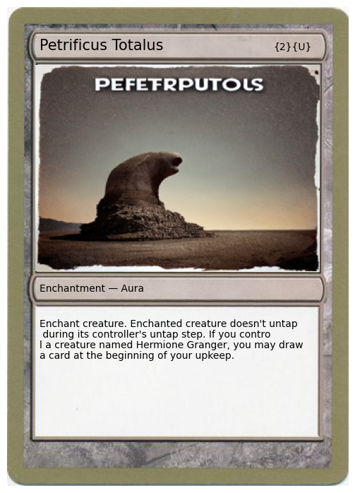 | Petrificus Totalus | 0 | Enchantment — Aura | Enchant creature. Enchanted creature doesn’t untap during its controller’s untap step. If you control a creature named Hermione Granger, you may draw a card at the beginning of your upkeep. | Uncommon | 2U |
| 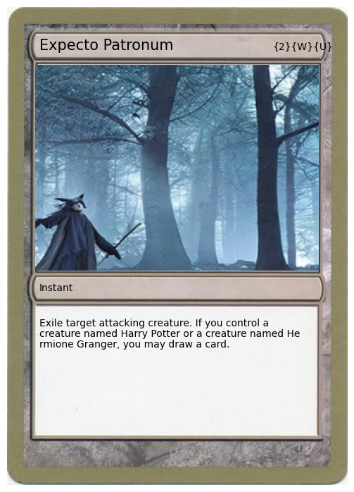 | Expecto Patronum | 0 | Instant | Exile target attacking creature. If you control a creature named Harry Potter or a creature named Hermione Granger, you may draw a card. | Uncommon | 2UW |
| 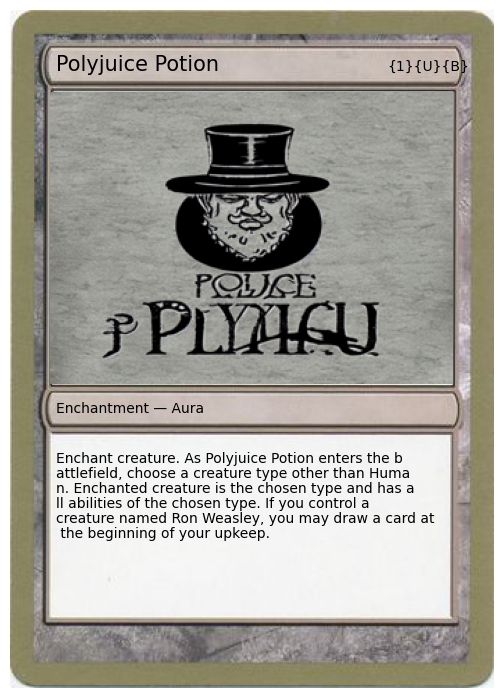 | Polyjuice Potion | 0 | Enchantment — Aura | Enchant creature. As Polyjuice Potion enters the battlefield, choose a creature type other than Human. Enchanted creature is the chosen type and has all abilities of the chosen type. If you control a creature named Ron Weasley, you may draw a card at the beginning of your upkeep. | Uncommon | 1UB |
| 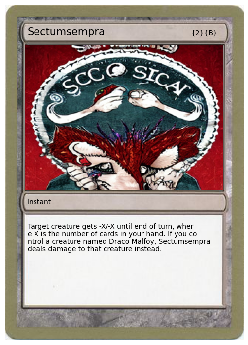 | Sectusempra | 0 | Instant | Target creature gets -X/-X until end of turn, where X is the number of cards in your hand. If you control a creature named Draco Malfoy, Sectumsempra deals damage to that creature instead. | Rare | 2B |
| 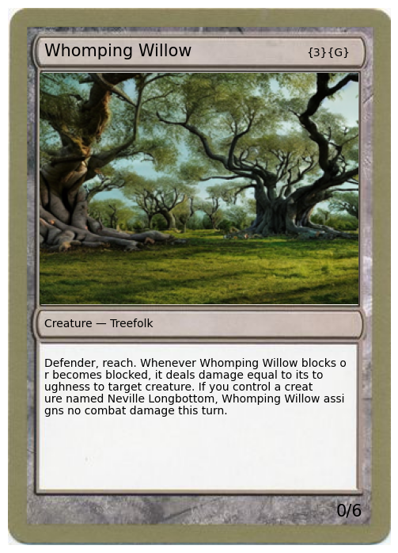 | Whomping Willow | 0 | Creature - Treefolk | Defender, reach. Whenever Whomping Willow blocks or becomes blocked, it deals damage equal its toughness to target creature. If you control a creature named Neville Longbottom, Whomping Willow assigns no combat damage this turn. | Uncommon | 3G |
Demo


The code for the demos is available on Google Colab or as a Huggingface Space; as mentioned, in order to run the code and generate cards, you need to have a OpenAI token. ChatGPT is offered as a pay-per-use service, so every generation costs: the price is by no mean expensive, but it’s a good thing to have in mind while playing with the demo :)
Last words
Acknowledgments
While wandering across GitHub, I stumbled across @minimaxir work on exploring ChatGPT API, and while inspecting his code, I came up with the idea for this blogpost. Big thanks especially for his context and prompt engineering; without his repository, I would be in trouble, since I have little to no experience in it.
Review history
2023-05-15 18:00:00 : First draft
My articles will always be open source, free and reproducible. My writings will always be discussion material, and my opinions can be debated and refuted.